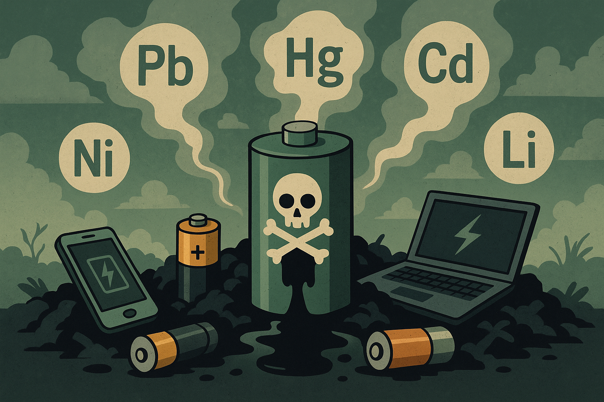

As baterias — de celulares, notebooks, pilhas ou outros dispositivos — contêm metais pesados e substâncias químicas tóxicas, como chumbo, mercúrio, cádmio, níquel e lítio. Embora esses elementos sejam indispensáveis para o funcionamento dos aparelhos, eles se tornam extremamente perigosos quando descartados de forma incorreta. Ao serem jogadas no lixo comum ou deixadas em locais inadequados, as baterias se degradam com o tempo, liberando essas substâncias no meio ambiente. O impacto pode ser silencioso, mas devastador.

Contaminação do solo: Os metais tóxicos presentes nas baterias podem afetar plantações, diminuir a fertilidade do solo e desequilibrar ecossistemas locais.
Poluição da água: Quando as substâncias químicas atingem lençóis freáticos ou cursos d’água, colocam em risco o abastecimento de água potável para comunidades inteiras.
Problemas de saúde: A exposição a esses metais está associada a doenças neurológicas, respiratórias, renais e até mesmo ao desenvolvimento de câncer.
Risco de incêndios e explosões: Baterias de íons de lítio, em especial, podem superaquecer e explodir quando danificadas ou descartadas de forma inadequada.
Jamais descarte baterias no lixo comum! Existem formas seguras e responsáveis de dar a elas o destino adequado:
Deposite em pontos de coleta específicos: Muitos supermercados, farmácias, lojas de eletrônicos e centros de reciclagem possuem coletores próprios para baterias usadas.
Procure os ecopontos da sua cidade: Esses locais são preparados para receber resíduos perigosos com segurança.
Use programas de logística reversa: Fabricantes e distribuidores, por lei, devem oferecer meios para o retorno de baterias e pilhas usadas.
Acesse o site do projeto Lixo Eletroeletrônico e descubra onde descartar baterias com segurança na sua região: https://lixoeletronicoemgoiania.com.br
Você sabia que os materiais retirados de baterias recicladas podem ser reutilizados na fabricação de novos dispositivos eletrônicos? Isso reduz a necessidade de extrair metais raros e evita os impactos ambientais da mineração.
Um gesto simples, como levar uma bateria até um ponto de coleta, pode evitar anos de contaminação ambiental e proteger a saúde de muitas pessoas. Faça sua parte. O planeta agradece.